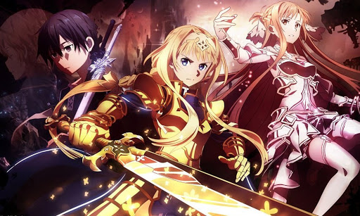
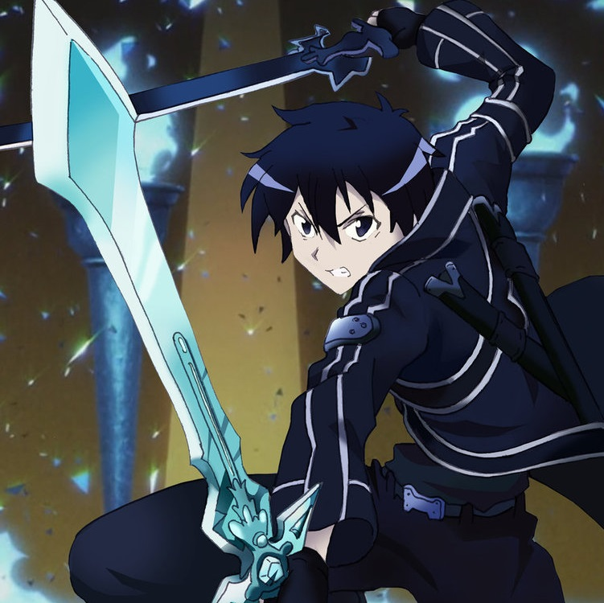

Sinopse:
Em 2022, um jogo de realidade virtual Massively Multiplayer Online
Role-Playing Game (VRMMORPG) chamado Sword Art Online foi lançado. Com o Nerve Gear,
um capacete que estimula os cinco sentidos do usuário através de seu cérebro, os
jogadores podem controlar seus personagens no jogo com suas mentes. Tanto o jogo
como o NerveGear foram criados por Kayaba Akihiko. Em 6 de novembro de 2022, 10.000
jogadores entraram pela primeira vez em SAO e, depois, descobriram que são incapazes
de sair. Kayaba aparece e diz aos jogadores que eles devem vencer todos os 100 andares
de Aincrad, um castelo de aço que é o cenário de SAO, se quiserem sair do jogo. Aqueles
que sofrem mortes no jogo ou tentam forçosamente retirar o NerveGear fora do jogo sofrerão
mortes na vida real. Um dos jogadores chamado Kirito é um dos 1.000 jogadores da fase
fechada beta. Como já conhecia o jogo, ele sentiu que poderia finalizá-lo facilmente.
Dessa forma, decidiu vencê-lo sozinho. Após dois anos, Kirito se torna amigo de Asuna,
por quem se apaixona. Kirito descobre a identidade de Kayaba em SAO e o enfrenta, conseguindo
vencê-lo e consequentemente libertando todos os jogadores.
Autor: Reki Kawahara
Criador: Reki Kawahara
Gêneros: Ficção de aventura, Ficção científica
Adaptações: Sword Art Online: Ordinal Scale (2017), Sword Art Online (2012)
| Temporada | Episódios |
| Temporada 1 | |
| Temporada 2 | |
| SAO Alicization |
